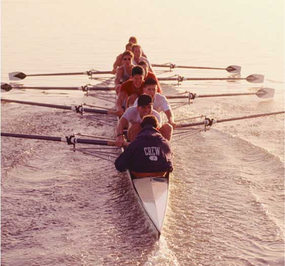
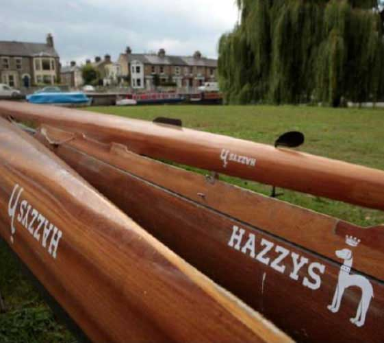
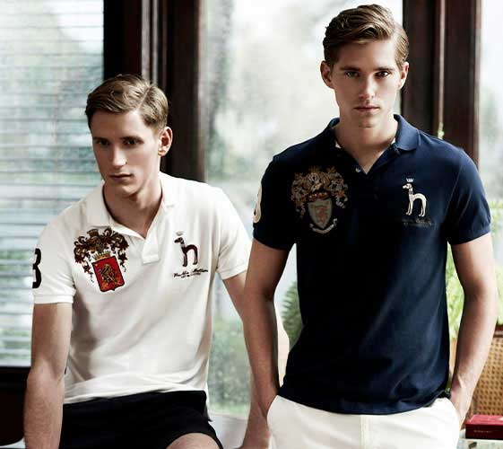
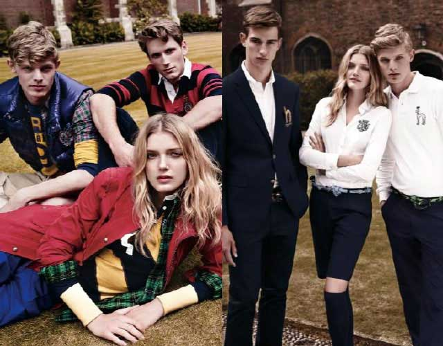

HERITAGE British Style, For your Urban Life
SCROLL
ROWING

THE ORIGIN OF ROWING
로잉은 노를 저어 배의 속도를 겨루는 수상경기로, ‘보트레이스(boat race)’ 또는 ‘레가타(regatta)’ 라고도 한다.
근대적인 스포츠로서의 로잉경기는 17세기에 영국 런던의 템즈강에서 시작되었다. 이후 1715년,
전문적인 로잉 경기가 열리게 되며 많은 관중을 모으는 스포츠로 자리 잡게 되었고,
19세기로 접어 들면서 영국 대학을 중심으로 한 아마추어 경기가 활발해졌다.
로잉 경기가 시작되기 전 템즈강 주변의 펍이나 카페,
보트 클럽의 텐트는 축제를 준비하느라 분주해졌고,
경기를 관람하기 위해 찾아온 사람들로 북적거렸다.
관람객들은 영국의 전통적인 칵테일인 ‘핌스(Pimm’s)’나 맥주를 마시며 경기를 관람하곤 했다.
로잉 경기는 영국인들에게 단순한 스포츠를 넘어선 사교의 장이었으며 축제이자 문화였다.
CAMBRIDGE UNIVERSITY
ROWING CLUB, HAZZYS
ROWING CLUB, HAZZYS
1829년 처음 개최된 케임브리지 대학과 옥스포드 대학의 로잉 대항전은 무려 2만여명의 관중들을 템즈강으로 모이게 만들었다.
이후 매 해 열리는 케임브리지와 옥스퍼드 대학 간의 로잉 경기는
라이벌 대항전을 넘어서 런던의 가장 큰 스포츠 축제 중 하나이다. 두 팀은 챔피언십 코스라고 불리는
4.2마일 코스에서 경기하며 이 정기전은 TV로 중계되어 1천5백만명이 관람하는 빅 이벤트가 되었다.
1828년에 창립된 캠브리지 유니버시티 보트 클럽(CUBC)의 통산 전적은 캠브리지 81승, 옥스포드 77승으로 캠브리지가 앞서있다.
1928년 케임브리지 대학에는 각 단과대별로 많은 로잉 클럽들이 있었는데 그 중 가장 파워풀한 전적으로 이름을 날린 것이 바로 헤지스 클럽이다.
이 클럽의 상징이었던 블루 컬러와 노(Oar)에 사용한 볼드한 스트라이프 문양은 현재 헤지스의 브랜드 컬러와 프레피 패턴, 문장에서 그 전통을 잇고 있다.

The Spirit of HAZZYS Club

ROWING STYLE
헤지스의 로잉 스타일은 경기에 임하는 선수들과 경기를 관람하는 매너있는 관중 모두에게서 영감을 받았다. 캠브리지 헤지스 클럽의 상징이었던 블루, 옐로 컬러와 로고, 엠블럼
그리고 로잉 경기 관람을 위한 드레스 코드에서 유래한 볼드한 스트라이프 재킷, 모자, 자수 등은 현재 헤지스의 피케 셔츠, 재킷, 팬츠 등 다양한 아이템에서 찾아볼 수 있다.
특히 세부 장식으로 헤지스 클럽의 엠블럼과 로잉 경기에 참여하는 인원인 숫자 ‘8’을 응용한 디자인은 헤지스에서만 찾아볼 수 있는 특별한 상징들이다.

CLASSIC SHIRTS, PIQUE
로잉 스타일을 논함에 있어 피케 셔츠는 가장 기본이 되는 아이템이다. 로잉, 폴로, 테니스 등
영국의 귀족들이 즐겨하던 스포츠에서 그 뿌리를 찾을 수 있는데 지금은 세대와 연령을 넘어서서 실용적인 아이템으로 통용되고 있다.
편안하게 입을 수 있는 캐주얼이지만 언제 어느 자리에서나 상대방에 대한 격을 갖출 수 있는 지성인들의 필수 아이템이다.
TRANDITIONAL JACKET
좋은 소재와 탁월한 재단으로 완성된 재킷은 입는 사람에게 당당함과 자신감을 선사해 준다.
케임브리지 대학의 로잉 클럽 선수들은 평소에는 경쾌한 스트라이프 재킷을,
템스강에서 치러진 옥스퍼드와의 경기 후 우승팀으로 당당하게 촬영할 때에는 깨끗한 화이트 재킷을 선택했다.
헤지스 클럽은 소속감과 일체감을 표현하기 위해 재킷에 엠블럼을 달거나 헴라인에 네이비
컬러 테이프를 장식하여 템스강의 시원한 기운을 담기도 했다.
THE CHINO SHORTS
보트 안으로 물이 튀는 것은 로잉 경기에선 피할 수 없는 일.
때문에 프레피 룩의 대표 하의인 치노 팬츠를 입을 수 없는 로잉 선수들은 쇼츠를 유니폼으로 선택했다.
헤지스 클럽은 자수와 스트라이프 패턴을 가미해 특별한 치노 쇼츠를 선보였다.
치노 쇼츠를 멋지게 입는 방법은 경기에 출전하는 로잉 선수들처럼 적당히 피트되는 피케 셔츠에 로퍼를 매치하는 것.
그리고 로잉 선수들처럼 스카프를 둘러 포인트를 주는 것이다.
YOUTHFUL STRIPE SHIRTS
스트라이프는 프레피 룩의 디테일 중 하나지만 로잉 룩에서는 가장 상징적인 패턴 아이콘이다. 이는 넘실거리는 높은 파도를 형상화한 스트라이프(마린룩에서 자주 쓰이는)를, 직선은 로잉 경기 선수들에게 요구되는 역동적인 에너지를 닮았기 때문이다. 8명의 선수가 보트에 앉아 노를 젓는 모습을 자세히 살펴보면 일렬로 물살을 가르는 8개의 노가 이루는 라인이 스트라이프 패턴에 닿아 있기 때문이기도 하다. 헤지스 클럽은 네이비와 엘로, 물결을 상징하는 화이트 컬러와 스트라이프 패턴을 통해 로잉의 정신을 계승하고 있다.
WOMEN'S ROWING
고도의 집중과 인내, 근력이 필요한 로잉 경기를 마친 뒤면 선수들은 마라톤을 완주한 것 같은 피로가 몰려온다고 한다. 여자 선수들에게 로잉은 무척 힘들고 인내를 요하는 경기였다. 그러나 로잉이 남자들만의 전유물이 아님을 증명이라도 하듯, 여성들의 레이스는 흥미진진하게 발전해왔다. 여성 로잉 클럽은 1877년, 웨스트 칼리지에서 처음 생겼으며 다음해인 1878년 켄터키 출신의 몰리 카인드가 컨빙턴 뉴포트 레이스에서 우승을 하면서 로잉계에 일대 파란을 일으켰다. 이후 1880년대부터 영국 여성 로어들의 전성기가 펼쳐지면서 여성 로잉 무대는 미국으로 넓혀갔다. 필라델피아를 중심으로 한 여성 로잉 클럽은 품위를 강조하는 정장을 입고 사진을 석판에 새기는 등 본격적인 여성 로잉 전성 시대를 열었다. 남성과의 차별을 원하지 않는 여성 로잉 선수들은 시합을 할 때 남자 선수들처럼 화이트 피케 셔츠와 치노 쇼츠를 입고 네이비 컬러 머플러를 두르는 옷차림을 즐겼다.
DETAIL
숫자 8 혼자 경기에 임하기도 하지만 로잉의 꽃은 8명이 한 보트에 타고 진행하는 경기. 8명이 박자를 맞춰 속도를 낼 때 그 팀은 승리에 한걸음 다가서게 된다. 1928 1928은 헤지스 로잉 클럽이 생긴 해를 뜻한다. 헤지스 로잉 클럽의 탄생 연도이기도 하지만 2천년에 런칭하여 20주년을 맞이한 헤지스에게 ‘2’와 ’8’은 특별한 의미이다. H.R.C 로잉은 개인이 아닌 팀플레이를 하는 경기로 단결과 소속감을 중시한다. 헤지스 크루(Crew)들은 H.R.C를 새김으로써 클럽의 멤버로써 자긍심을 가슴에 품었다. 알파벳 H 케임브리지와 옥스포드의 로잉 선수들은 클럽의 이니셜을 딴 로고를 만들고 자긍심 대결을 펼쳤다. ‘H’는 ‘HAZZYS Club’의 이니셜이다 Emblem 엠블럼은 로잉뿐 아니라 프레피 룩을 대표하는 디테일 중 하나다. 헤지스 클럽의 엠블럼은 배와 노를 이용해 로잉을 상징적으로 표현한 것이 특징이다.